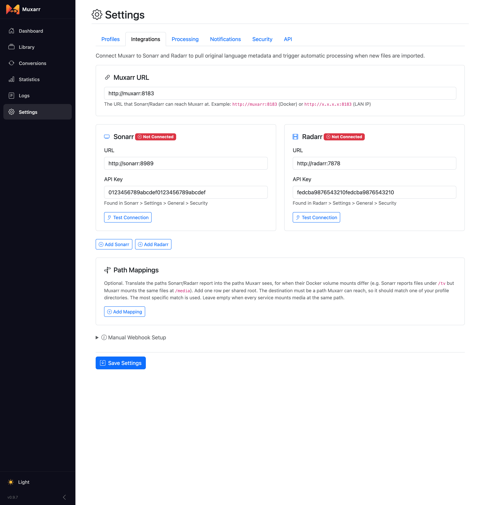
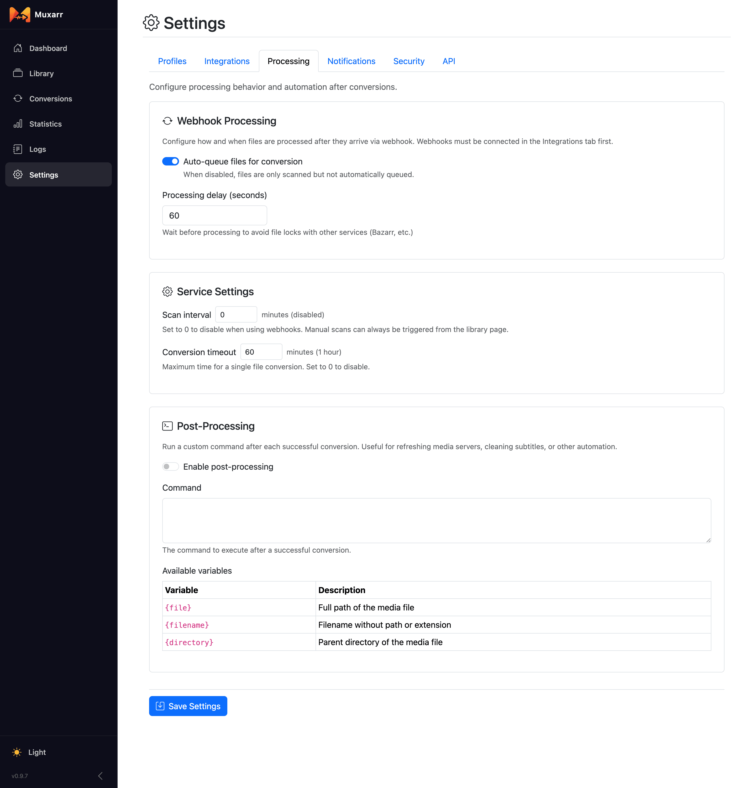
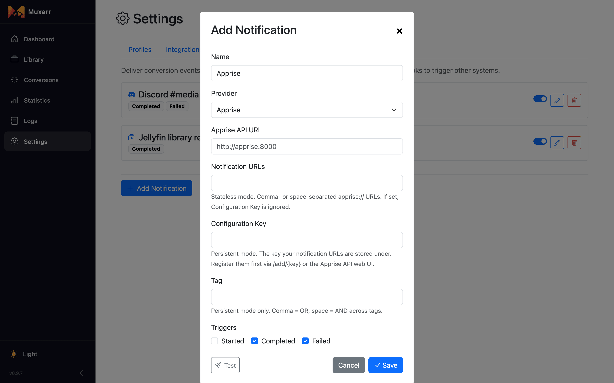
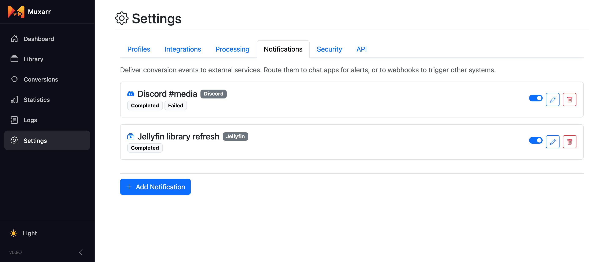
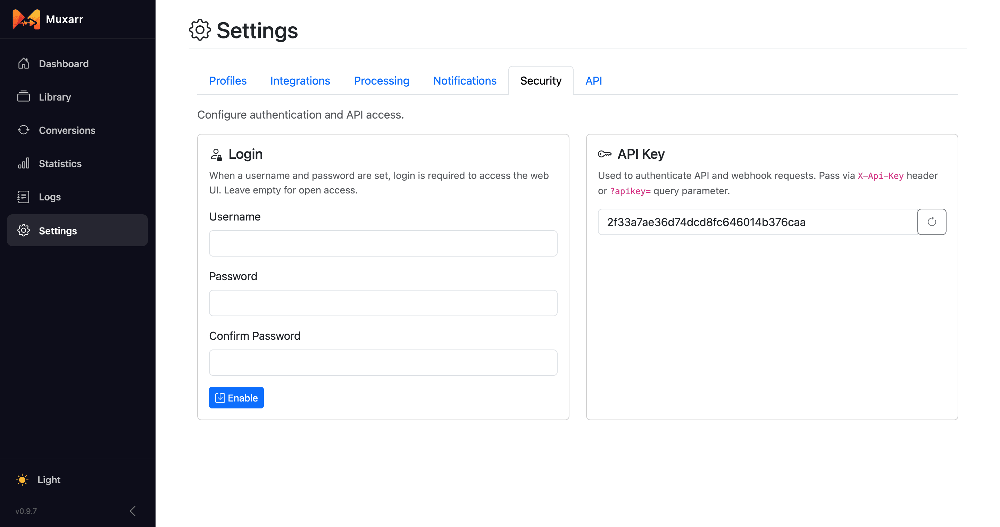
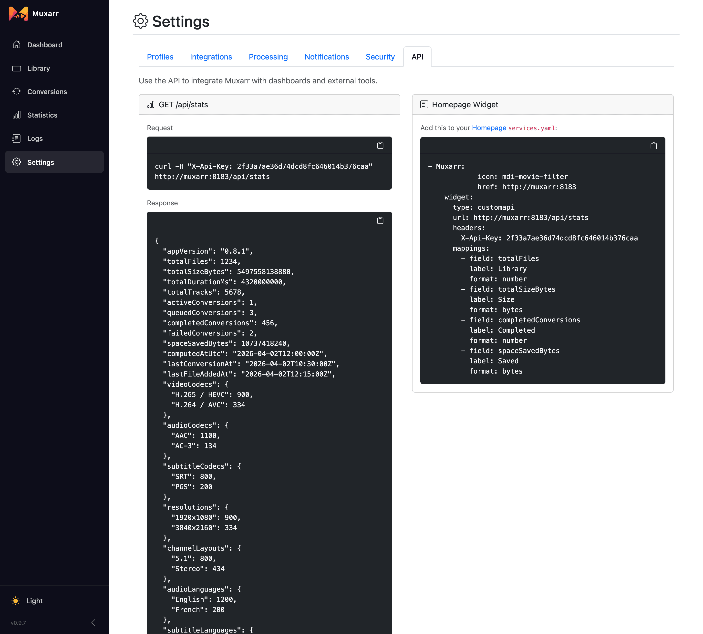

Sonarr, Radarr and notifications
Muxarr works from manual scans on its own. Connect Sonarr and Radarr and it also learns each film's original language and cleans up new imports as they arrive. Notifications, on the same Settings page, refresh your media server or send you a message when a conversion is done. This page covers every Settings tab except Profiles.
Why connect Sonarr and Radarr
Two things come from the connection:
- Original language. Sonarr and Radarr know that Dark is German and Spirited Away is Japanese. Muxarr uses that to make the Original Language row in a profile mean something. Without it, that row matches nothing and a foreign film could lose its real soundtrack.
- Automatic processing. A webhook (an automatic message one app sends another when something happens) lets Sonarr or Radarr tell Muxarr the moment a file is imported or renamed, so it gets cleaned up without anyone opening the Library.
Connecting

- Fill in Muxarr URL: the address Sonarr and Radarr can reach Muxarr at.
http://muxarr:8183works when the containers share a Docker network; otherwise use a LAN address such ashttp://192.168.1.20:8183. The address you type in your own browser is not always reachable from another container. - For each service, enter its URL and API key (found in Sonarr or Radarr under Settings › General › Security) and click Test Connection.
- Once connected, click Connect Webhook. Muxarr creates the webhook inside Sonarr or Radarr for you, with the right URL, events and API key. The card then shows Webhook Active.
- Save Settings.
More than one Sonarr or Radarr? Add Sonarr and Add Radarr add extra cards. If you prefer to set the webhook up by hand, expand Manual Webhook Setup at the bottom: it shows the exact URL to paste into a Webhook connection in Sonarr or Radarr, with method POST and the On Import and On Rename events.
Path mappings
Sonarr and Radarr report file paths as they see them. If their containers mount the media
differently from Muxarr's (they say /tv/Dark/..., Muxarr has it at
/media/tv/Dark/...), add a mapping from their root to yours. Leave this empty
when everything mounts media at the same path.
How the webhook flow works
When Sonarr or Radarr imports or renames a file:
- The webhook reaches Muxarr with the file path, the title and the original language.
- Muxarr waits for the Processing delay (60 seconds by default). This gives tools that also react to imports, Bazarr in particular, time to finish writing subtitles before Muxarr opens the file.
- The file is scanned. Its profile is found by folder; a path mapping is applied first if you set one up.
- With Auto-queue files for conversion on, the file is queued and converted if there is anything to do. Switch it off if you only want new files scanned so you can review them in the Library first.
- Notifications fire when the conversion starts, completes or fails.
Renames are handled the same way, which is what keeps Muxarr in step when Sonarr or Radarr move a file after import.
Processing settings

- Auto-queue files for conversion
- Whether files that arrive by webhook are converted right after scanning. On by default.
- Processing delay
- How long to wait after a webhook before touching the file. 60 seconds is a good default with Bazarr around; raise it if Bazarr takes longer to fetch subtitles.
- Scan interval
- A timed library scan, in minutes. 0 disables it. With webhooks in place you can leave it off; without them, an hourly scan is a common choice. Manual scans always work from the Library.
- Conversion timeout
- A conversion that runs longer than this is cancelled and marked failed. The default of 60 minutes is generous for a rewrite; 0 removes the limit.
The Post-Processing section on this tab is covered further down. Short version: it runs a command of your choice after a conversion; it does not rename files and you do not need it to refresh your media server.
Refresh Plex, Emby or Jellyfin after a conversion
After Muxarr rewrites a file, your media server still shows the old track list until it looks at the file again. Add the server under Settings › Notifications and tick the Completed trigger; Muxarr then asks it to refresh after each conversion. This is the whole setup, no scripts needed.

- Plex
- Server URL and your X-Plex-Token. Optionally a library section ID; by default Muxarr then asks Plex to scan only the folder of the converted file, which is quick even for a big library. Leave the section blank to refresh all libraries.
- Emby, Jellyfin
- Server URL and an API key. Optionally a library item ID to refresh only that library; leave it blank to refresh the whole server. Full metadata refresh re-fetches everything instead of only what is missing, which is slower and rarely needed.
Messages: Discord, Telegram and more

The same Notifications tab also sends messages. Every entry, message or refresh, has three triggers: Started, Completed and Failed; new entries default to Completed and Failed. A completed conversion reads like "The Matrix - saved 412 MB (18.4%)"; a failed one includes the last line of the error.
| Provider | What it needs |
|---|---|
| Discord, Slack | A webhook URL from a channel's integration settings. |
| Telegram | A bot token from @BotFather and the chat, group or channel ID. |
| Pushover | App token and user key. |
| Gotify | Server URL and an app token. |
| Ntfy | Server URL (ntfy.sh or your own), a topic, and an access token if your server needs one. |
| Apprise | The Apprise API URL, then either notification URLs (stateless) or a configuration key and optional tag (persistent). |
| Webhook | Any URL, with an optional Authorization header. Muxarr posts JSON with the event, title, body, filename, sizes before and after, and a timestamp. Use this to trigger your own automation. |
Security

Login puts a username and password in front of the web UI. If you skipped
it in the wizard you can enable it here, and change or disable it later.
Trust the local network lets devices on your LAN in without logging in
while still asking anyone coming from outside. Behind a reverse proxy, make sure the proxy
forwards the real client address (X-Forwarded-For), otherwise every request looks
local.
The API Key protects the webhook endpoint and the API. Sonarr and Radarr get it automatically when you use Connect Webhook. Regenerating it breaks those connections and any dashboard using it, so reconnect them afterwards.
Post-processing (advanced)
If you do have a job that should run after Muxarr is done, say cleaning up a subtitle file next to the video, touching a marker file or writing to your own log, enter the command under Settings › Processing › Post-Processing. Muxarr fills in three variables:
| Variable | Meaning |
|---|---|
{file} | Full path of the media file |
{filename} | The filename without folder or extension |
{directory} | The folder the file is in |
The preview under the command shows what would run for an example file.
API

GET /api/stats returns the numbers behind the dashboard and statistics pages as
JSON: file counts, total size, conversions, space saved and the codec, language and
resolution breakdowns. Pass the API key in an X-Api-Key header or as
?apikey=. The tab shows a ready-made curl line and a
Homepage widget snippet you
can paste as-is.